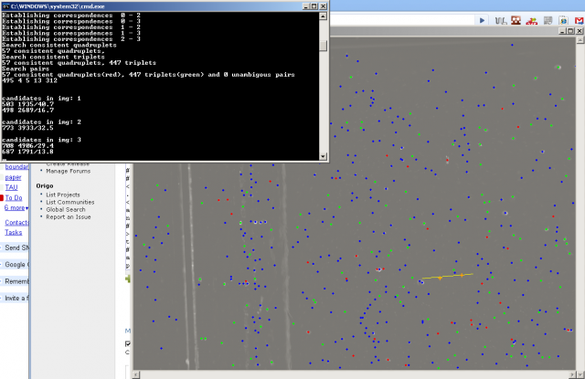
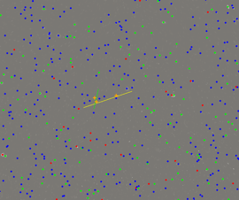

Introduction
The 3D-PTV was designed to be user-friendly. One of the great features is the visualization and information on almost every step of the process, from high-pass filtering, grey level intensity of the particles, to the number of the particles identified and various zoom options, few to mention. One great feature that we want to present here is the epipolar lines. The following snapshots and short tutorial explain how to use it and how to manipulate the length and quality of stereoscopic correspondences using the epipolar geometry.
Tutorial
For the tutorial we use the /test folder - the particles are large and clearly seen.
- the folder can be downloaded using the ZIP or TAR.GZ (see on the left) package of the software
- run the
start.batand pressSTARTbutton. Four images will appear. - Apply the standard procedure going through:
Pretracking -> High Pass -> Image Coord -> Correspondences - You shell see the four images with red, green and blue dots. Red - means the particle is quadruplet, green - triplet and blue is doublet.
- Click with the right-mouse-button on one of the red particles in image 1 (Cam1). Click on Cam2 window and you'll see yellow line which is the projection of the epipolar line on Cam2 and two crosses that point onto the particles which are candidates of being a correspondence of the particle clicked from Cam1. In addition, in the command window some additional information is provided. Similar lines are seen in Cam3 and Cam4. 
- Click on one of the yellow crosses in Cam2 that are marked as candidates, using again the right-button. In Cam3 and Cam4 you'll find two epipolar lines, one yellow (from Cam1) and one green (from Cam2). 
- Repeat the click in Cam3 on the particle which is closest to the intersection of Cam1 and Cam2 epipolar lines. In Cam4 will appear also epipolar line from Cam3 which is basically reduces the number of possible candidates to the region which is intersection of 3 epipolar lines now: yellow, green and red (from Cam3).
- repeat clicking on the "best candidate" in Cam4 and you'll get blue epipolar line on all the other cameras (blue is from Cam4).

Unfortunately, it doesn't work nice with the zoom/magnification, we're looking for a workaround.
The number that defines the distance from the epipolar line to the possible candidate is defined in Main Parameters: Tolerance Epipolar Band (mm): 0.05 mm for example in this test data. Play with the number to see how it affects the number of candidates, quality of identification, etc. The rule of thumb was to have something like 1/3 of the RMS error of the calibration procedure, but this is not a strict rule or recommendation.